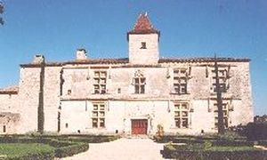
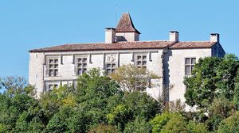
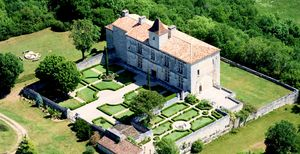
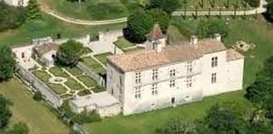
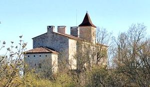
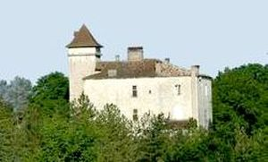
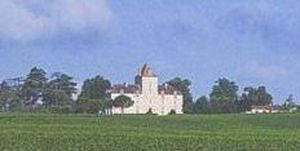
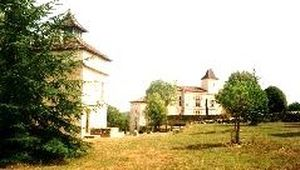

Recensement Jean-Claude Truffet
| Département | 46 — Lot |
| Canton | Cahors-3 |
| Commune | Cieurac |
| Type d'édifice | Château |
| Période d'origine | XIII-XV |








CIEURAC, la seigneurie appartenait au Moyen-Age à la maison d'Hauteferres qui construisirent le château au XVe siècle. En 1372, ils confièrent à Bertrand de Cardaillac d'en assurer la garde. En 1469, Jean de Cardaillac hommage pour la baronnie de Cardaillac et plusieurs châteaux dont Cieurac. De même que ceux de Saint-Cirq-Lapopie, Biars et Concots, le château de Cieurac aurait été démoli sur ordre de Louis XI pour punir Raymond de Cardaillac d'avoir pris le parti du duc de Berry ; en 1590, Charles VIII le nomme sénéchal de Quercy et Raymond de Cardaillac aurait alors choisi d'établir sa résidence à Cieurac. Son fils Jacques de Cardaillac, sénéchal du Quercy, la construction du nouveau logis, que ses formes situent vers 1500, devrait être attribuée à Jacques de Cardaillac et son épouse Jeanne de Peyre, dont les armes figurent en différents endroits. dénombre pour Cieurac, entre autres lieux, en 1504 ; et il obtient du roi, en 1512, en raison des services rendus par son père Raymond, de vêtir le lion de son écu d'une cotte d'armes d'azur semé de fleurs de lys. Leur héritier Antoine-Hector, seigneur de Saint-Cirq-Lapopie, de Peyre et de Cieurac, épouse en 1540 Marguerite de Caumont ; converti au protestantisme, il meurt vers 1567. Le château aurait été arasé au niveau du premier étage sur ordre de Richelieu. Cieurac est possédé par les Cardaillac jusqu'en 1629, date à laquelle Jacques Dayrac en hérite, puis passe par alliance aux Godailh qui le conservent jusqu'à la Révolution. Le château est pillé en 1790 puis vendu comme bien national en 1794 au citoyen Caminel ; en 1850, le contrôleur des contributions y remarque encore la place des fossés et des ponts-levis, des restes de créneaux, des croisées fort belles, des cheminées, en regrettant que le propriétaire ait mutilé l'édifice en lui enlevant sa toiture pour la remplacer par un toit de maison bourgeoise. Incendié par la division Das Reich en 1944, le château a fait l'objet d'une reconstruction très fidèle dans les années 1970.
Cieurac, le logis est un rectangle prolongé sur le côté par un bâtiment qui forme un décrochement est conserve à son extrémité nord le vestige d'un corps de bâtiment du XIIIe ou du XIVe siècle. les harmonieuses façades sont percées de grandes fenêtres à double croisillon de pierre. A l'opposé, les arrachements laissés par la destruction de deux salles superposées montrent un buste de femme, sculpté sur un culot, qui permettrait de dater le bâtiment disparu de la fin du XIIIe siècle ou du début du XIVe siècle. Le début du chantier pourrait se situer vers 1503, avec un arrêt après 1512, puisque le lion des Cardaillac porte la cotte d'armes sur le blason placé au-dessus de la fenêtre haute de la travée de l'escalier, sur l'élévation Est, le décor montre cependant d'apparentes incohérences, les armes des Peyre, des Caumont et des Cardaillac sont placées sur des cuirs découpés, motif qui se diffuse dans les années 1540 ; ceux-ci sont associés, sur des clefs rapportées, à des couronnes décoratives dont les motifs appartiennent au vocabulaire de la Renaissance, tout à fait absent du reste du décor architectural qui reste fidèle aux formes gothiques.
Famille de Raymond de Cardaillac
"
Château de Cieurac